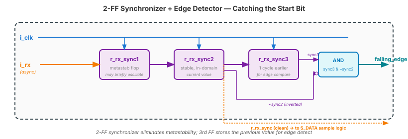

Video 1 of 4 · ~10 minutes
Dr. Mike Borowczak · Electrical & Computer Engineering · CECS · UCF
16× oversampling is the standard across every UART implementation since the original 8250 UART chip (1970s). Intel's 8250, 16550A, and descendants all use 16×. FTDI USB-UART chips use 16×. ARM's PL011 UART uses 16×. Your FPGA vendor IP uses 16×. Once you learn this technique, you can reverse-engineer any UART RX in under 10 minutes. Also: 16× is the foundation of every clock-recovery scheme in modems, SerDes, and high-speed links.
Topic 11 TX was straightforward — you controlled the timing. Today's RX is the hard part, and the “16× oversampling” trick is what makes it work. Once you have RX working (Video 2), you have full-duplex UART on your Go Board. Topic 12 Video 3 introduces SPI; Video 4 integrates everything.
“For RX, I'll just reverse the TX: count CLKS_PER_BIT cycles, sample the line, move to the next bit.”
You don't know when the byte arrives. The transmitter's clock and yours drift independently up to ±2%. If you sample at CLKS_PER_BIT intervals starting from the detected start edge, by bit 8 your sample point has drifted well into the next bit. You need to sample in the middle of each bit, not at the edges, to tolerate drift. 16× oversampling gives you the machinery to do this.
One bit time (CLKS_PER_BIT cycles)
├─────────────────────────────────────┤
│ │ │ │ │ │ │ │ │ │ │ │ │ │ │ │ │
0 1 2 3 4 5 6 7 8 9 A B C D E F ← 16 oversample slots
▲ ▲
│ │
start mid-bit sample point
edge (slot 8) → this is the value
CLKS_PER_OSX = CLKS_PER_BIT / 16. At 25 MHz/115200 baud: 217/16 = 13.6 cycles per oversample slot. The FPGA counter counts up to 13 or 14 cycles per oversample.
// 1. Synchronize the async RX line
// (2-FF sync — Topic 5 returns!)
reg r_rx_sync1, r_rx_sync2, r_rx_sync3;
always @(posedge i_clk) begin
r_rx_sync1 <= i_rx; // metastab
r_rx_sync2 <= r_rx_sync1; // stable
r_rx_sync3 <= r_rx_sync2; // 1 cycle earlier
end
wire falling_edge =
r_rx_sync3 & ~r_rx_sync2;
Why does UART RX use 16× oversampling? Why not 4× (cheaper) or 64× (more precise)?
~4 minutes
▸ COMMANDS
cd lecture_examples/week3_day12/d12_s2_ex1/
python3 plot_sampling.py
# walks +0%..+10% drift,
# 4× / 8× / 16× / 64× side-by-side▸ EXPECTED OUTPUT
Drift 4× 8× 16× 64×
+2.0% 9 9 9 9
+3.0% 8 9 9 9
+5.0% 5 7 8 9
+7.0% 3 5 6 6
(value = last bit sampled
correctly in a 10-bit frame)Ask AI: “Design a UART RX module with 16× oversampling. Describe the counter hierarchy, start-bit validation logic, and sample-point calculation.”
TASK
AI describes 16× oversampling RX.
BEFORE
Predict: 2 counters (oversample + bit), 2-FF sync, start-bit revalidation at slot 8.
AFTER
Strong AI mentions glitch rejection via mid-start resample. Weak AI skips this.
TAKEAWAY
The mid-bit resample is what distinguishes robust RX designs from fragile ones.
① RX is harder than TX — you don't control the timing.
② 16× oversampling is the universal UART RX trick.
③ Sample each bit at its midpoint (slot 8 of 16).
④ 2-FF sync + edge detect + mid-bit revalidation = robust design.
🔗 Transfer
Video 2 of 4 · ~12 minutes
▸ WHY THIS MATTERS NEXT
You have the theory. Video 2 is the build: FSM states, oversample counter, sample-and-shift logic. Full working Verilog. End of Video 2: your Go Board echoes characters you type in your terminal. Full-duplex. Your RTL has become a conversation partner.